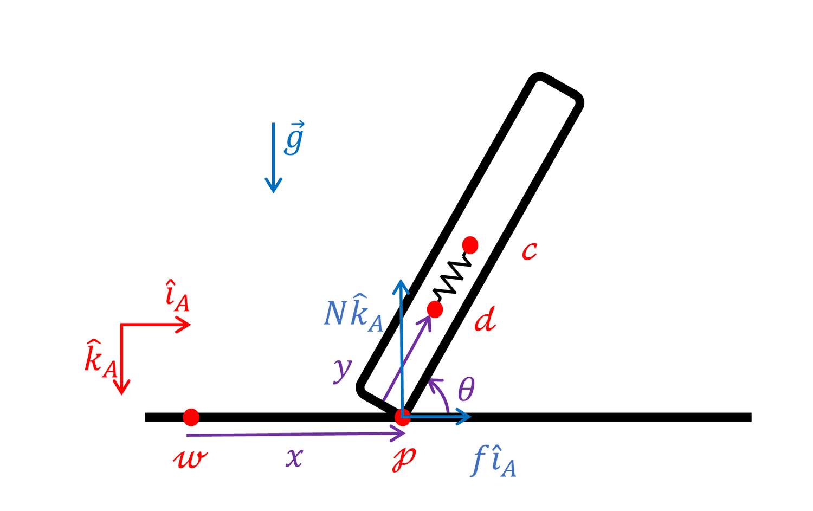

Jumping With Frictional Contact

Figure 1. A point mass is constrained on a rail. As the spring releases, the rail jumps.
Inspired by my old jumping vehicle, I did a simulation of jumping with frictional contact for my robotics manipulation course (Figure 1). During the taking-off stage, I chose displacement x, spring length y, and inclined angle theta as general coordinates for Lagrangian dynamics. Frictional force was evaluated by Newtonian dynamics formulation, and then fed into the Lagrangian dynamics as external forces (Figure 2). For the detailed project, please see attached document.

Figure 2. Free body diagram
Acknowledgment:
Thank you ME599 (robotics manipulation instructed by Professor Nima Fazeli and graduate student instructor Miquel Oller Oliveras) for allowing me to choose my own project topic.
Thank you ME540 (intermed dynamics instructed by Professor Dennis S Bernstein and graduate student instructor Juan Augusto Paredes Salazar) for teaching me dynamics rigorously.
Thank you ME560 (system modeling instructed by Professor Jeffrey L Stein) for teaching me proper modeling.